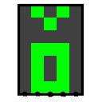
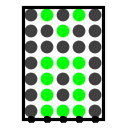

LED 矩阵
| 库: | 输入/输出 |
| 介绍: | 2.2.0 |
| 外观符号: |   |
行为
显示一个小像素网格，其值由当前输入确定。 网格最多可以有 32 行和 32 列。
引脚
组件的接口根据输入格式属性的值而变化。 它具有三个可能的值。
- 列
- 输入沿着组件的南边缘排列，矩阵的每一列都有一个多位输入。 每个输入的位数与矩阵中的行数一样多，低位对应于列中最南端的像素。 1 表示点亮相应像素，而 0 表示保持该像素变暗。 如果列的任何位是浮点值或错误值，则该列中的所有像素都会点亮。
- 行数
- 输入沿着组件的西边缘排列，矩阵的每一行都有一个多位输入。 每个输入的位数与矩阵中的列数一样多，低位对应于行中最右边的像素。 与列格式一样，1 表示点亮相应的像素，0 表示使像素保持暗淡。 如果一行的任何位是浮动值或错误值，则该行中的所有像素都会点亮。
- 选择行/列
- 组件的西边缘有两个输入。 较高的多位输入具有与矩阵中的列一样多的位，低位对应于最右边的列。 较低的多位输入具有与矩阵中的行一样多的位，低位对应于底部行。 如果任一输入中的任何位是浮点值或错误值，则矩阵中的所有像素都会点亮。 不过，通常情况下，如果上部输入中的相应列位为 1 并且下部输入中的相应行位为 1，则特定行列位置处的像素会被点亮。例如，对于 5x7 矩阵，如果第一个输入 为01010，第二个为0111010，则第二、三、四、六行的第二、四列点亮； 结果似乎是一对感叹号。 （这种输入格式可能看起来不直观，但 LED 矩阵在商业上销售时正是使用这种接口。例如，Lite-On 就销售此类组件。
属性
- 输入格式（组件创建后只读）
- 选择引脚与像素的对应方式，如上所述。
- 矩阵列
- 选择矩阵中有多少列，范围可以是 1 到 32。
- 矩阵行
- 选择矩阵中有多少行，范围可以是 1 到 32。
- 关于颜色
-
选择
点亮时像素的颜色。
- 色差
-
选择像素
暗淡时的颜色。
- 光持久性
-
当该值不为 0 时，
点亮
的像素在组件输入指示该像素应变为暗淡
后，在给定的时钟周期数内保持点亮状态。 - 点形状
- 方形选项意味着每个像素都绘制为 10x10 正方形，填充组件，像素之间没有间隙。 圆形选项意味着每个像素都绘制为直径为 8 的圆，每个圆之间有间隙。 圆形选项更难以解释，但它更接近现成的 LED 矩阵组件。
Poke 工具行为
无
文本工具行为
无
返回 电路元件库参考手册